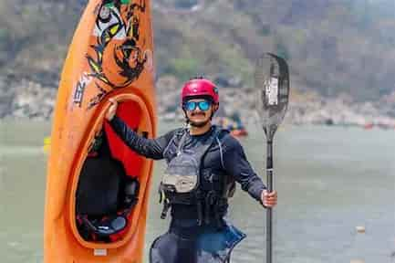
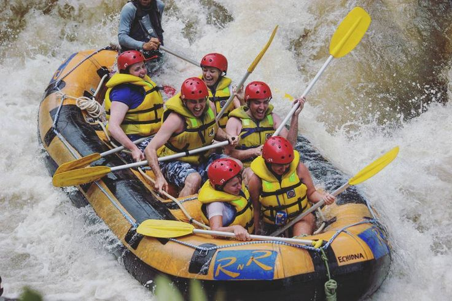
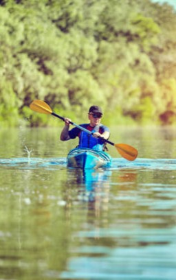
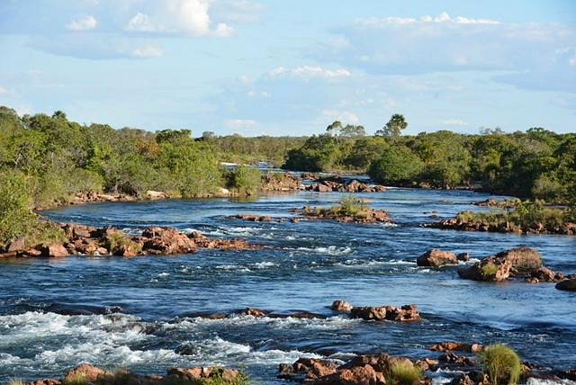
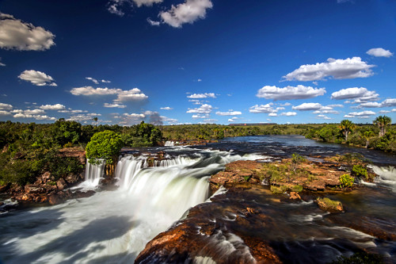
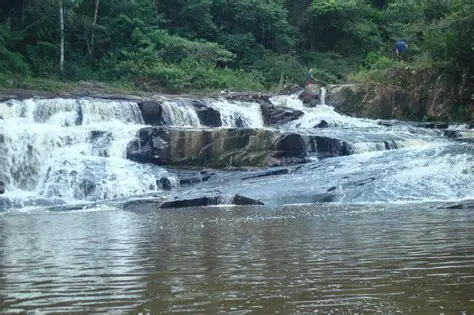
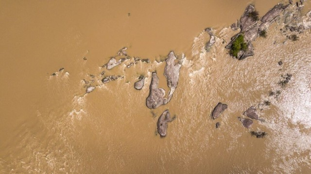
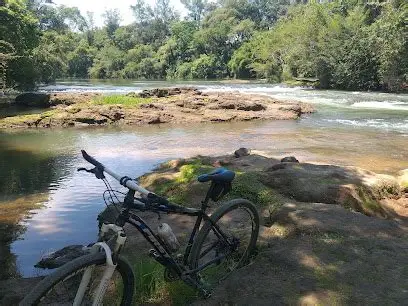

Sobre nossa missão

Missão: Proporcionar aventuras na natureza que sejam seguras e divertidas. Visão: Queremos ser referência número 1 em diversão, segurança e adrenalina. Lema: Uma aventura inesquecível e eletrizante


Missão: Proporcionar aventuras na natureza que sejam seguras e divertidas. Visão: Queremos ser referência número 1 em diversão, segurança e adrenalina. Lema: Uma aventura inesquecível e eletrizante
A Aventuras Rafting nasceu do sonho de levar pessoas a viverem a mesma emoção que seu fundador sentiu ao descer um rio pela primeira vez. Começando com um único bote e muita paixão pela natureza, a empresa cresceu aos poucos, conquistando aventureiros da região com segurança, profissionalismo e experiências inesquecíveis.

Com o tempo, novos equipamentos, instrutores treinados e parcerias fortaleceram a marca, que hoje é referência em turismo de aventura e continua guiando pessoas a descobrir a força da água e a alegria de superar desafios.




